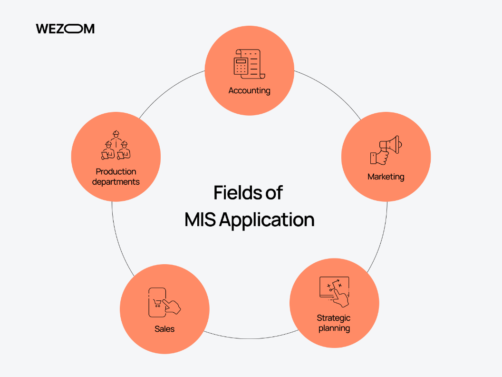
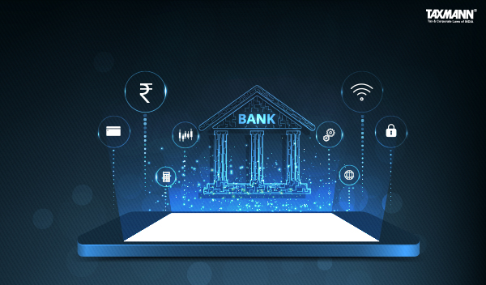
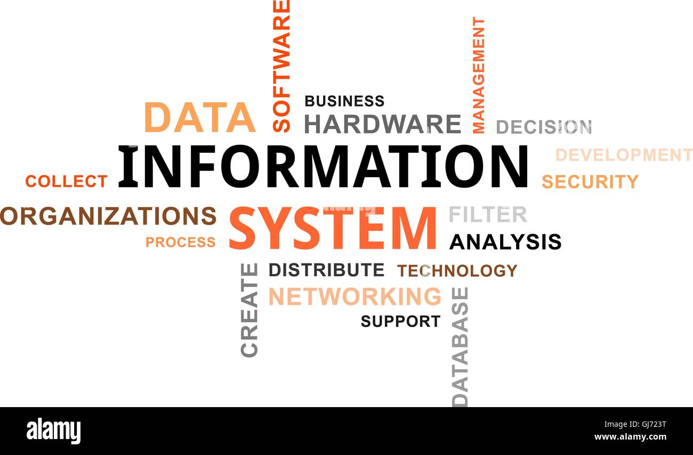

MANAGEMENT INFORMATION SYSTEMS
& IT’S ROLE IN FINANCIAL SECTOR
Midhun Madhu
25102
 AN
OVERVIEW
AN
OVERVIEW
Introduction on MIS-The key to efficient Decision Making.
Nowadays, technology plays a vital role in shaping and structuring a business or an organization. It can be referred as the backbone of all functions that organizations carry out.
A Management Information System (MIS) is an organized system that collects, processes, stores, and provides information to support decision-making, coordination, and control in an organization. It integrates people, technology, and processes to convert raw data into meaningful information that managers can use for planning, monitoring, and managing operations effectively. MIS ensures that accurate and timely information is available to the right person at the right time. It helps organizations improve efficiency, productivity, and strategic decision-making. Systems for sales reporting, inventory control, financial management, and human resource planning are some examples of MIS.

In short, MIS bridges the gap between technical data processing and managerial decision-making, allowing organizations to respond quickly to changes in the business environment and achieve their goals more effectively.
When and Where is MIS Utilized?
MIS finds extensive utilization across almost every department of an organisation
Customer Relationship Management (CRM): Utilized for customer data analysis, segmentation, and personalized service delivery.
Risk Management: Used for risk assessment, compliance monitoring, and fraud detection.
Operations: Streamlining processes such as account management, transactions, and reporting.
Marketing and Sales: Targeted marketing campaigns, product promotions, and customer acquisition strategies.
Finance and Accounting: Financial analysis, budgeting, and performance monitoring.

MIS in Financial Sector
In the ever-evolving landscape of modern business, where precision and efficiency reign supreme, Management Information Systems (MIS) emerge as the unsung heroes, to connect and process seamless operations.
The use of MIS in financial sector is very important because it helps banks and financial institutions streamline their operations. By collecting data from various sources, MIS enables the organization to identify trends, monitor financial health, and evaluate employee performance. This helps businesses make data-driven decisions, avoid errors, and improve their service delivery. In addition, MIS ensures that all the information is accurate, easily accessible, and secure, which is essential in the fast-paced world of finance.
A Financial Management Information System (FMIS) is the Information Technology system whose components or modules enable a government to implement its financial management functions.
India’s corporate landscape is experiencing a rapid shift towards digital financial management. Businesses are investing heavily in cloud-based accounting systems, AI-driven financial analytics, and automated MIS tools to enhance financial transparency.
According to KPMG India, over 75% of mid-to-large enterprises have already integrated some form of FMIS to improve decision-making.
Future Trends in Banking with MIS
The Technological Tapestry: Emerging Trends
The future of MIS in banking is entwined with emerging technologies. From Artificial Intelligence to Blockchain, these innovations shape the landscape, promising unprecedented levels of efficiency, security, and customer-centric solutions.
Advancements through MIS
Banking automation will witness significant advancements through MIS, with an anticipated increase in transaction speed and a reduction in manual interventions.
The synergy between MIS and evolving technologies promises a future where banking operations are not only automated but also remarkably intelligent.
Empowering Professionals: The Evolving Role
Professionals play a pivotal role in this evolving landscape. Staying abreast of MIS trends is paramount, ensuring that professionals are equipped to harness the full potential of evolving technologies.

Conclusion
MIS is an integral to modern financial operations. It is essential to enhance efficiency, bolster risk management, improve customer relations, support strategic planning, and ensure regulatory compliance. To implement the financial management functions, an IT system is necessary. It is known as Financial Management Information System (FMIS).
FMIS is linked with a central data warehouse (DW) to record and report all daily financial transactions, offering reliable consolidated platforms can be referred to as integrated FMIS. The World Bank is a leading provider of financing and technical assistance for FMIS development. FMIS solutions can significantly improve the efficiency and equity of government operations, and offer a great potential for increasing participation, transparency and accountability.
In short, as the financial sector continues to evolve, the role of MIS will become increasingly indispensable in driving sustainable growth and competitive advantage for any organisation.
.
References
Information Sources
Textbook- Management Information Systems-Managing the Digital Firm BY KENNETH C. LAUDON & JANNE P. LOUDEN
https://paytm.com/blog/glossary/mis-full-form-meaning-definition/
https://cbslgroup.in/blogs/a-detailed-overview-of-management-information-system-in-banking
https://www.pinnvalor.com/Financial-MIS-The-Key-to-Smarter-Decision-Making-and-Cost-Optimization
https://www.worldbank.org/en/topic/governance/brief/financial-management-information-systems-fmis
Image Sources